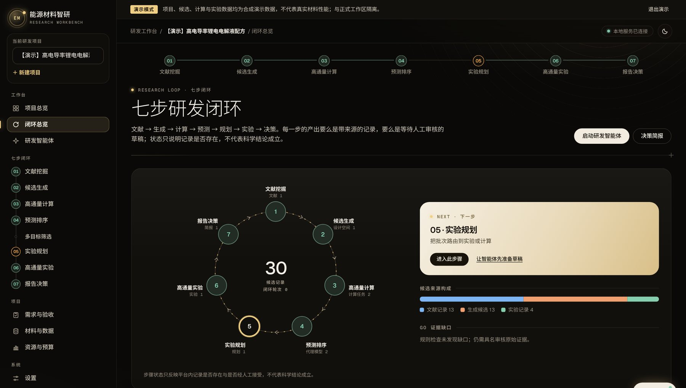
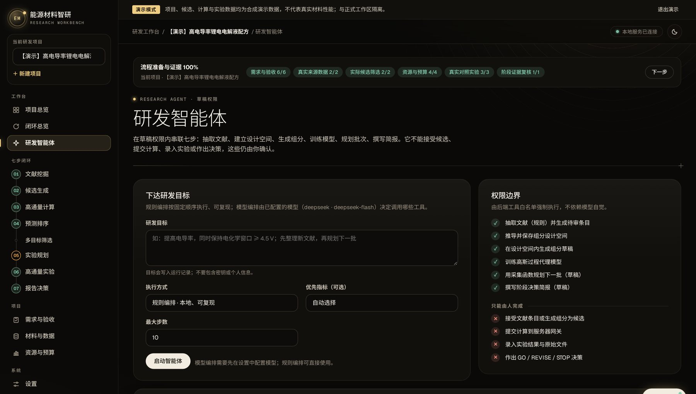

筛选慢
一个课题组一年只能验证几十个配方；计算靠专职博士，DFT 失败率高、排错靠经验。
用 Agent 分层安排计算先做初筛，算失败了自动排错重试。
电解液决定了电池快充、高压、宽温和安全性能的上限。溶剂、锂盐、添加剂的组合超过百万种，配方研发却还主要靠“炒菜式”试错，一种新材料从立项到验证常要 10–20 年。难的是从这么多组合里，挑出值得做实验的那几个。
研发卡在四个地方
一个课题组一年只能验证几十个配方；计算靠专职博士，DFT 失败率高、排错靠经验。
用 Agent 分层安排计算先做初筛，算失败了自动排错重试。
文献、专利、实验记录与计算结果彼此割裂，换一届学生等于从零开始。
用一个研发工作台，把目标、候选、配方、样品和原始数据关联起来。
答不出“下一个实验做什么最值”，路线选择依赖个别专家的直觉。
给出排序和淘汰理由，按证据门槛决定继续、调整还是停止。
计算筛出的候选，难以直接变成可测试的样品与数据。
由合作实验室按协议制样、测试，交付实体样品和原始数据。
客户如果已经有自己的工具、候选或实验资源，可以只买其中一类。三类服务分开交付、分开验收，不用整套购买。
按任务做高通量计算；也为课题组和企业研发部门开发、部署、运维科研 Agent，接入客户自己的算力和数据。
按客户的工况和约束查找、设计候选，经过约束过滤和多保真计算，给出排序、淘汰理由和可以直接执行的研发方案。关键候选由专家复核。
目前由合作实验室按协议完成合成、配制和测试，交付实体样品、原始数据和报告。自有的自动配液单元还在规划中。
研发工作台把一个课题分成七步，从文献一直到决策。每一步产出的要么是带来源的记录，要么是等人审核的草稿；任务、候选、配方和样品用同一套编号，结果能追溯、能复算。


研发工作台 · 七步研发闭环。演示模式截图：项目与数据均为合成演示数据，不代表真实材料性能。
研发智能体只有草稿权限，可以把七步依次跑一遍；接受候选、提交计算、录入实验和作决策，都要人来确认。演示模式截图。
这些方法来自团队成员已发表的研究，方向包括界面机理、溶剂窗口和机器学习；计算由已经连续运行两年多的 Agent 系统调度。
任务拆解、工具调用、状态管理与失败重试。
xTB → MD → DFT 分层；便宜档与高精度档配对校准达标才升档。
先过硬门槛，再按帕累托前沿和满意度函数排序，每批留出探索名额。
合作实验按协议制样测试，结果写回候选记录，再用来重新训练代理模型。
按论文的计算方法，算出来的值和实验值相差不超过 0.7 V；常用的 HOMO/LUMO 估算会高出 1.5–2.5 V，VIP/VEA、AIP/AEA 两种算法高出 4.5–7.2 V（图中没画）。
数据读自团队成员合作论文 Adv. Funct. Mater. 2023（doi:10.1002/adfm.202212342）原图，为读图约值，以原文为准。
7.5Ah LCO/Li 软包在 -20℃、0.5C 下循环 400 次的容量保持率。
National Science Review 13 (2026) · nwaf543溶剂电化学窗口计算库，用于电解液稳定性筛选。
Adv. Funct. Mater. 2023GBDT 预测结合能的验证集 RMSE，约为 SVR 的一半。
Energy Storage Materials 35 (2021)辅助离子去溶剂化模型，解释界面去溶剂化与成膜机理。
Adv. Energy Mater. 2023以上是团队成员参与发表的研究，不是公司的商业项目结果。论文成果归原单位，我们用的是其中可以迁移的方法。
面向电解液厂商与电池企业研发部门，按低温、高电压、快充等工况寻找与优化候选配方。
用同一套 Agent 和计算流程，做电解液和隔膜的联合设计。
等电解液的交付流程标准化之后，再扩展到 MOF / COF 等多孔材料的筛选、平行合成和气体吸附评估。
进展
成员来自新加坡国立大学、清华大学、斯洛文尼亚国家化学研究所、华南理工大学和中国科学技术大学。
新加坡国立大学在读博士，清华大学化工硕士；负责搭建 Agent 系统、研发工作台和自动化计算流程。
玛丽居里学者；参与上述溶剂窗口、去溶剂化与低温电解液研究。
清华本硕；多家新能源公司技术负责人经历。
华南理工大学在读博士；多孔材料合成与表征。
中国科学技术大学硕士；生物基材料研究与双创项目经验。
公司筹建中；团队由创始人与拟协作成员组成，角色与参与方式逐人确认。后续按首单与复购情况补充商业化与 Agent 工程人员。
请写清目标体系、1–3 个主要指标和硬约束。我们先做计算，给出候选方案，再按协议安排实验验证。